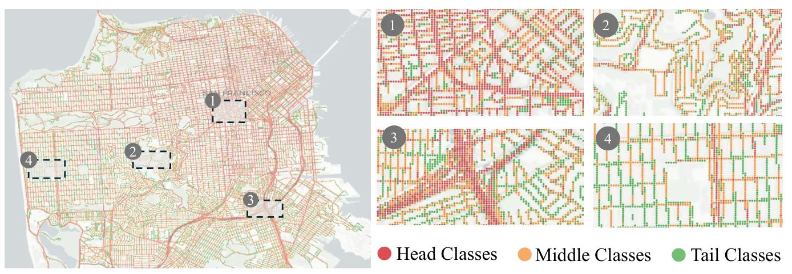
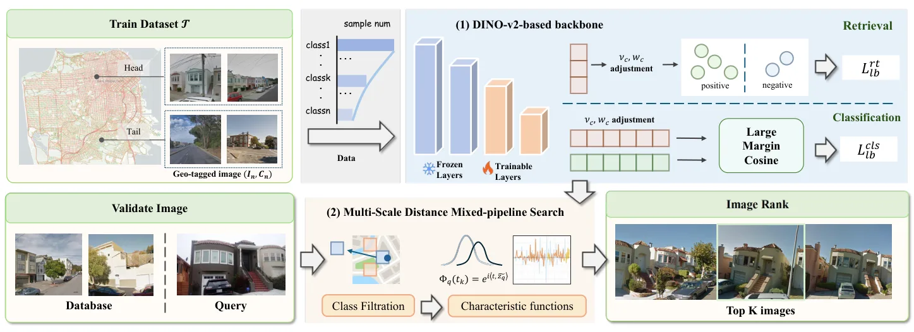

Lost in the Tail：解决城市视觉地点识别中的地理长尾不均衡Lost in the Tail: Addressing Geographic Imbalance in Urban Visual Place Recognition
直接相关于视觉地点识别、城市级重定位和闭环检索；适合关注大规模定位鲁棒性的人优先阅读。
一句话工作总结
把城市 VPR 中的地理长尾偏置显式纳入训练和检索，可提升稀疏区域视觉重定位鲁棒性。
摘要
该文指出城市级 Visual Place Recognition 数据集中存在严重地理长尾：热门位置图像丰富，冷门区域样本稀少，导致模型系统性偏向高频地点。作者提出 Distribution-Aware Place Recognition（DAPR），作为 model-agnostic plug-in，在训练阶段重新平衡 head/tail class 的梯度贡献；在 classification-retrieval pipeline 中，还通过 multi-scale distance search 计算每类 distributional compactness，为检索阶段提供互补增益。论文在 SF-XL test set v1 上比原 classification-retrieval baseline 提升 18.3%，v2 提升 6.7%，并在 SF-XL、MSLS、Pitts30k 和多种 VPR 方法上获得一致改进。
Urban-scale Visual Place Recognition (VPR) aims to identify the geographic location of a query image by matching it against a geo-tagged database. While recent methods achieve impressive performance, they overlook a serious long-tailed problem hidden in urban-scale datasets, which biases the model towards locations with abundant images and ignores less-visited areas, causing models to systematically favor frequently photographed locations while failing in sparsely covered areas. In this paper, we systematically characterize this imbalance challenge and propose Distribution-Aware Place Recognition (DAPR), a model-agnostic plug-in framework that rebalances gradient contributions across head and tail classes. Additionally, within classification-retrieval pipelines, DAPR applies a multi-scale distance search mechanism to compute per-class distributional compactness, providing complementary gains at the retrieval stage. On the large-scale SF-XL benchmark, our framework outperforms the previous classification-retrieval baseline by 18.3% on test set v1, and 6.7% on test set v2. As a plug-in module, it achieves consistent improvements across representative VPR methods on SF-XL, MSLS, and Pitts30k, demonstrating broad generalizability across different methods and benchmarks.
中文解读摘录
- 为什么看：直接命中视觉地点识别/重定位。城市级 VPR 数据常有热门地点过采样、冷门地点样本少的问题，这会让模型偏向高频地理位置，影响长尾区域定位鲁棒性。
- 方法要点：提出 Distribution-Aware Place Recognition（DAPR），作为 model-agnostic plug-in，在训练端重新平衡 head/tail class 的梯度贡献；在 classification-retrieval pipeline 中，用 multi-scale distance search 计算每类 distributional compactness，作为检索阶段补充。
- 结果信号：在 SF-XL test set v1 上较 classification-retrieval baseline 提升 18.3%，v2 提升 6.7%；在 SF-XL、MSLS、Pitts30k 上对多种 VPR 方法有一致增益。
- 跟踪建议：值得重点跟进实现和 loss/reweighting 细节；可用于城市峡谷/大规模视觉重定位数据集的采样偏置修正。
- 链接：abs · PDF
图表/页面预览

{kind=link}

{kind=link}
